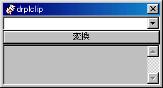
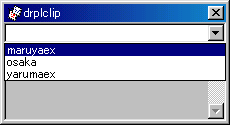

青空文庫 「文の道具箱」
1999年5月31日 作成
2000年9月15日 修正
テキスト処理に便利なツール類を、紹介します。
●新字新仮名のファイルを、旧字旧仮名に変換
Macintoshの場合
使用するツール
・ConvChar（テキスト変換ユーティリティー） ここで入手できます。
・丸谷君（旧字旧仮名辞書） ここで入手できます。
１ ConvCharと丸谷君をダウンロードし、それぞれ解凍して下さい。
２ ConvCharは、文章のいじくりにいろいろ役立つツールです。「ConvCharについて」と題したマニュアルを読むことをお薦めしますが、やっぱり読まない人のために、以下の手順を書いておきます。
３ ConvChar Folderを開いて、ConvCharを選択し、とっととエイリアスを作って「新字旧字変換」なりなんなり、わかりやすい名前に付け替える。
４ 名前を付け替えたエイリアスを、デスクトップなどの目に付きやすい場所に移動。
５ エイリアスをダブルクリックして起動。
６ ファイル選択ダイアログが現れるので、いったんキャンセル。
７ ファイルメニューから「設定」を選択。
８ 現れたダイアログで、「変換辞書１は未定義です」と書かれた右の「ロード」をクリック。
９ ファイル選択ダイアログが現れるので、「丸谷君フォルダ」を探して開き、「丸谷君」を選択。ダイアログの「OK」をクリック。
１０ ８のダイアログが再び現れる。「出力ファイルのクリエータ」は、初期設定ではJeditの「JEDT」になっている。Jeditを持っていない人は、アプリ選択をクリックして、普段使っているエディターを選択しておく。テキストの出力先は、初期設定では「ConvCharのフォルダ」になっているけれど、「元ファイルのフォルダ」に変更した方がわかりやすいかもしれない。
１１ 新字新仮名のファイルを、エイリアスにドロップすると「処理内容を選んでください」というダイアログが開かれる。はじめて開かれたダイアログでは、１〜５まですべて、「Non」と表示されている。１の右の長方形を選択し、「文字列の置換」を選ぶ。二度目からは、あらかじめ１に「文字列の置換」が選ばれた状態で、ダイアログが開かれる。「開始」をクリック。
１２ 旧字旧仮名に変換され、名称の末尾に「+」の付いた新しいファイルが作られる。
ConvCharでは、設定情報はアプリケーション内部に保存されます。ですから、用途別にいくつもConvCharをインストールし、必要な設定をおこない、エイリアスに「なになに用」とはっきりわかる名前を付けておけば便利でしょう。
Windowsの場合 (2000.9.14現在)
使用するツール
・drpl（テキスト変換ユーティリティー） ここで入手できます。
・丸谷君（旧字旧仮名辞書） 丸谷君の第二版を拡張したものが、drplには同梱されています。
その１ perlの準備
drplはperlで書かれているため、dlplと丸谷君以外に、perlが必要です。perlは、2000.9.14現在、バージョン5.005が最新のようです。
既にperlがインストールされている場合は、「その２」に飛んで下さい。
-
http://www.activeware.com/Products/ActivePerl/Download.html
から、ActivePerlをダウンロードしてください。もちろん「Windows Intel」と書かれたところをクリックすればOKです。ファイルサイズは約8.5MBです。
なぜか、このファイルは異様に新しいインストーラを使用しているので、Windows95/98、NTを使っている場合は、そのままではインストールできません。同じページの少し上のところに「Windows2000ユーザはしなくていいけど、NTや95/98の人はインストーラをここからダウンロードしてね」と書かれていますね。お使いのOSのほうをクリックして下さい。ファイルサイズは約1.5Mです。
-
まずインストーラをセットアップしましょう。
ダウンロードしたファイルをダブルクリックするとセットアップが進行していくので、そのまま進めていきます。終了したらパソコンを再起動して下さい。
-
次に、ActivePerlをインストールします。
ダウンロードしたActivePerlのファイルをダブルクリックして下さい。インストール画面が出てくるので、ずっとNextボタンを押して、進めて下さい。２画面目に同意書がでてきます。ここではacceptにチェックしなおしてNextを押します。
インストールが進んでいき、最後にFinishボタンが出てきたら完了です。
これでperlを使う準備ができました。普通にインストールした場合、Cドライブに\perlフォルダが作成され、拡張子.plは、\perl\bin\perl.exeに関連付けられています。
-
市販のperl参考書には、perlを収録したCD-ROMが付いているものがたくさんあります。プログラミング雑誌などの付録CD-ROMにも収録されていることがあります。
ファイルサイズが大きいので、ダウンロードするのが負担に思われる場合は、こういった市販のCD-ROMを入手してインストールしてもかまいません。少し前のバージョンとなる場合がありますが、drplの機能には影響はありません。
その２ drplを使う
-
次に、いよいよdrplをインストールしましょう。
ダウンロードファイルは自己解凍形式です。まずどこかに専用フォルダを作ります。ダウンロードファイルをその中に移動し、ダブルクリックして下さい。（くれぐれも専用フォルダをお忘れなく。自動的にフォルダを作ってくれないので、うっかり解凍すると、たくさんファイルが出てきて慌てます(^^;）
-
解凍して出てきたファイルの中に、install.plというのがあります。これをクリックします。
DOS窓が開いて、いくつかメッセージが出てきます。「確認が完了した」旨のメッセージが出たら、enterを押して完了して下さい。
-
次に、drpl専用フォルダの中に、dicという名前のフォルダを作ります。
drplフォルダの中には拡張子.dicというファイルがいくつかありますので、これをdicの中に移動して下さい。これで辞書を使う準備が完了です。
-
クリップボードタイプの使い方
手軽な使い方です。ただし、クリップボードを使うので、あまり長い文章は、途中までしか変換できません。
フォルダの中の、drplclip.exeをクリックすると、次のようなウィンドウが現れます。

-
辞書を選択する
ウィンドウ上部のリストボックスは、辞書選択用です。
リストから、辞書を選んで下さい。新字新かな→旧字旧仮名用の辞書は、maruyaexです。

-
変換したい文章をエディタやワープロで開き、変換したい範囲を選択し、「コピー」して、クリップボードに格納して下さい。
-
ウィンドウの下の部分に、クリップボードの内容が表示されたら、「変換」ボタンを押して下さい。
DOS窓が開き、メッセージが表示されたあと、自動的にDOS窓が閉じます。drplclipのウィンドウに表示された文章は、旧字旧仮名になっているはずです。
-
変換結果は、クリップボードに入っています。エディタなどにペーストして、保存して下さい。
-
初期表示されるdrplのウィンドウは小さいですが、適宜サイズの調整をして使いましょう。
-
コマンドタイプの使い方
MS-DOSのコマンドに慣れていないと少しとっつきにくいイメージがありますが、この方法を使えば、長い文章でも途中で切れずに変換できます。
-
まず、エディタでAUTOEXEC.BATを開き、次の２行を追加して書き込みます。
SET PATH=《drplをインストールしたフォルダ名》;"%PATH%"
SET DRPLDIC=《辞書のあるフォルダ名》
フォルダ名は、いずれもドライブ名からのフルパス名を書いて下さい。
例） C:\drpl
-
「スタート」メニュー→「プログラム」→「MS-DOSプロンプト」で、DOS窓を開きます。
drpl -u -D 《辞書名》 《変換したいファイル名》 > 《変換後のファイル名》
-DのDは、必ず大文字で書いて下さい。旧字旧仮名に変換する場合、辞書名はmaruyaexです。
例） drpl -u -D maruyaex \aozora\text\souseki\kairo.txt > \aozora\kana\kairo.txt
ファイル名は、慣れない場合は最上位のフォルダからのフルパスで指定すると良いでしょう。
●JIS 0208漢字コード表
もりみつじゅんじさん作成のJIS漢字コード表を、Zipで圧縮して、ここに置きます。